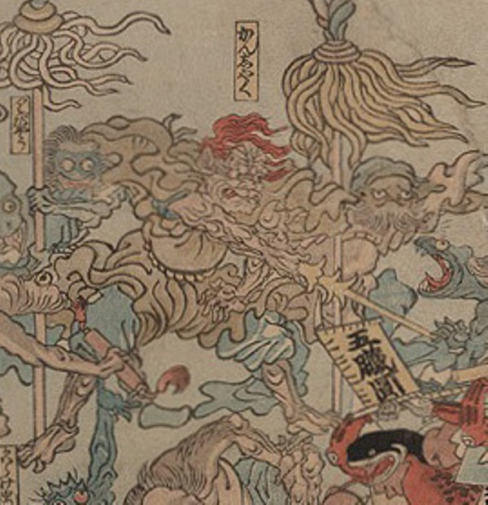

病気；ビョウキ，疫神；エキシン，癇癪；カンシャク

癇癪が擬人化した化物。鬼のような形相で、髪は赤く、衣をまとっている。剣を振りかざし、他の疫神を指揮しているようにも見える。
著作者：歌川芳虎／出典：親書誌：U426_nichibunken_0012：諸病諸薬の戦い；ショビョウショヤクノタタカイ／日付：2006／資源識別子：U426_nichibunken_0012_0013_0000
Copyright (c)2010- International Research Center for Japanese Studies, Kyoto, Japan. All rights reserved.